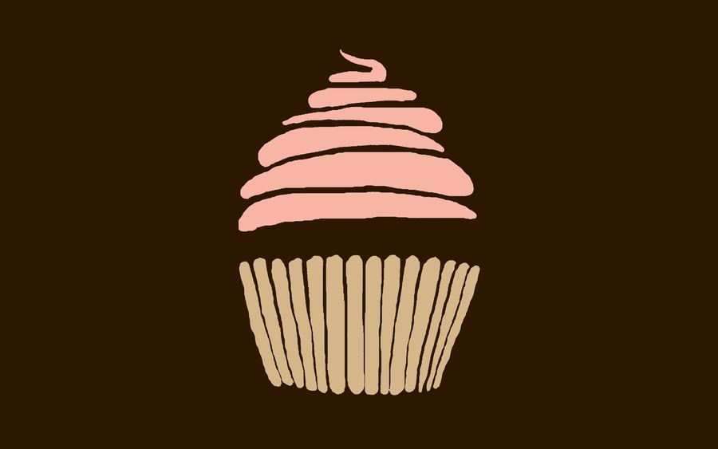

ABOUT
Sweetness is one of the five basic tastes and is universally regarded as a pleasurable experience, except perhaps in excess. Foods rich in simple carbohydrates such as sugar are those most commonly associated with sweetness, although there are other natural and artificial compounds that are sweet at much lower concentrations, allowing their use as non-caloric sugar substitutes. Examples of foods that may be used as non-sugar sweet substitutes include saccharin, aspartame, acesulfame potassium, sucralose, xylitol, erythritol, and stevia. Other compounds, such as miraculin, may alter perception of sweetness itself.
The chemosensory basis for detecting sweetness, which varies between both individuals and species, has only begun to be understood since the late 20th century. One theoretical model of sweetness is the multipoint attachment theory, which involves multiple binding sites between a sweetness receptor and a sweet substance.
Studies indicate that responsiveness to sugars and sweetness has very ancient evolutionary beginnings, being manifest as chemotaxis even in motile bacteria such as E. coli.[1] Newborn human infants also demonstrate preferences for high sugar concentrations and prefer solutions that are sweeter than lactose, the sugar found in breast milk.[2][3] Sweetness appears to have the highest taste recognition threshold, being detectable at around 1 part in 200 of sucrose in solution. By comparison, bitterness appears to have the lowest detection threshold, at about 1 part in 2 million for quinine in solution.[4] In the natural settings that human primate ancestors evolved in, sweetness intensity should indicate energy density, while bitterness tends to indicate toxicity[5][6][7] The high sweetness detection threshold and low bitterness detection threshold would have predisposed our primate ancestors to seek out sweet-tasting (and energy-dense) foods and avoid bitter-tasting foods. Even amongst leaf-eating primates, there is a tendency to prefer immature leaves, which tend to be higher in protein and lower in fibre and poisons than mature leaves.[8] The 'sweet tooth' thus has an ancient evolutionary heritage, and while food processing has changed consumption patterns,[9][10] human physiology remains largely unchanged.
Sweet Desire